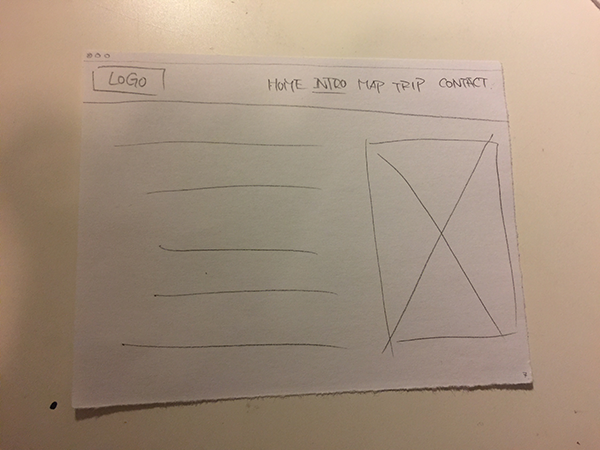
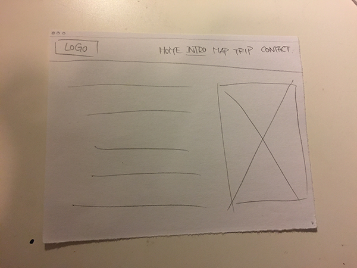

· Impression of Hangzhou ·
For the paperprototype, I have draw a very simple static model; However, Glenda said that was too simple and standard at first, so I have an idea to build an interactive trip planner to interact with users.

 
